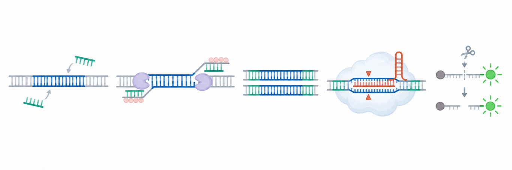
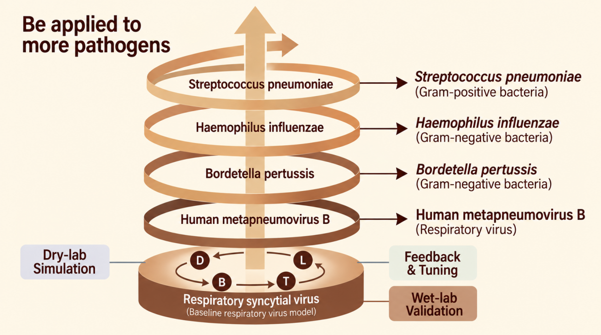
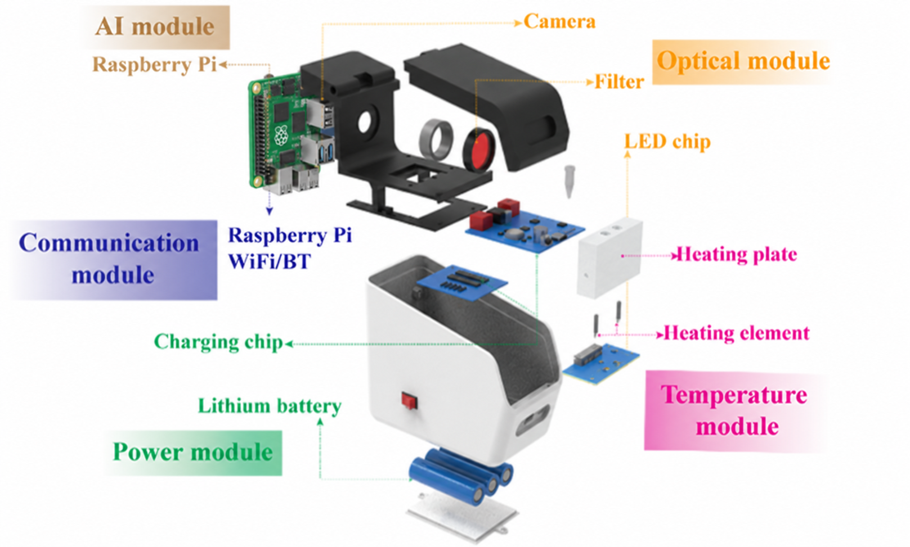
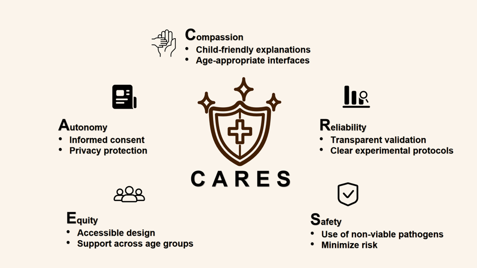

1. WETLAB
Our contribution is not limited to establishing detection assays for individual respiratory pathogens. We developed a reusable assay-development framework centered on the Design–Build–Test–Learn (DBTL) cycle, in which computational prediction, mechanistic modeling, experimental construction, wet-lab validation, and feedback are connected in a spiral iterative process. Using the RSV N gene as the initial model target, we addressed three recurring bottlenecks in RPA–CRISPR/Cas12a development: (i) how to integrate RPA amplification and CRISPR/Cas12a detection into a single tube while maintaining compatibility between the two reaction modules; (ii) how to reduce the large sequence-search space for RPA primer–crRNA combinations; and (iii) how to narrow the multidimensional reaction-parameter space before extensive wet-lab optimization. To address these challenges, we established a single-tube RPA–CRISPR/Cas12a architecture and two interconnected dry–wet lab closed loops: a DNABERT-6-based sequence-screening loop and an enzymatic-kinetic-model-based reaction-parameter optimization loop. Together, these contributions shift assay development from broad empirical trial-and-error toward model-guided, experimentally corrected, and iteratively improvable design.
1.1 Dual Dry–Wet Lab Closed Loops for Sequence Selection and Reaction-Parameter Optimization
Our first methodological contribution is to make wet-lab validation an active part of dry-lab iteration rather than the final step of a one-way prediction workflow. We applied this principle at two different stages of assay development: sequence screening and reaction-parameter optimization.
At the sequence-screening stage, DNABERT-6 was used to prioritize RPA primer–crRNA combinations. Wet-lab experiments then tested whether the model-prioritized candidates retained their expected performance in the actual RPA–CRISPR/Cas12a system. The results supported the model's ability to reduce the candidate space, but also showed that computational ranking and experimental performance were not completely identical. This distinction is important: the dry-lab model is most useful for deciding which candidates should be tested first, while the wet lab remains necessary for identifying which combination actually performs best.
More importantly, the experimental result is not treated as the endpoint of the sequence-screening process. Differences between prediction and experiment reveal information that is not yet fully captured by the model and can therefore be fed back into subsequent screening and design. The first loop is thus organized as prediction → focused experimental screening → comparison between predicted and observed performance → feedback → revised design. This turns primer–crRNA selection from a one-time computational ranking into an iterative dry–wet process.
After candidate sequences are selected, the same logic is extended to reaction optimization. Dry-lab modeling is used to provide a narrower and more informative parameter space rather than requiring the wet lab to explore a broad range of conditions blindly. Wet-lab experiments then test these model-guided ranges in the actual coupled reaction system. The resulting experimental behavior is used to judge which predicted regions are practically workable and to refine the direction of the next round of parameter optimization.
The second loop can therefore be summarized as model-guided parameter prediction → targeted wet-lab optimization → comparison between predicted and experimental behavior → feedback → updated parameter search. The value of this process is not a particular predicted number, but the reduction of unsupported trial-and-error: modeling determines where experiments should focus, and experiments determine how the next round of modeling should be constrained.
Together, these two loops establish a continuous relationship between dry and wet lab. The sequence-level loop narrows what should be built, while the parameter-level loop narrows how the reaction should be optimized. In both cases, prediction reduces the experimental search space, wet-lab validation prevents model output from being treated as a final answer, and experimental feedback provides the basis for the next DBTL cycle.
1.2 Establishing a Single-Tube RPA–CRISPR/Cas12a Reaction Architecture
Alongside the iterative dry–wet workflow, we established a single-tube RPA–CRISPR/Cas12a reaction architecture to reduce post-amplification handling and provide a practical experimental platform for the optimized sequence and reaction conditions.
Conventional workflows in which CRISPR detection follows nucleic-acid amplification generally require the reaction tube to be reopened after amplification and the amplicons to be transferred into a downstream detection mixture. Once large amounts of nucleic acid have been amplified, these operations increase the possibility of amplicon exposure and cross-contamination. Repeated lid opening and liquid transfer also introduce additional handling steps and opportunities for human error.
To address this issue, we integrated RPA amplification and CRISPR/Cas12a detection within the same reaction tube so that amplified products could proceed to CRISPR detection without reopening the tube or transferring amplicons after amplification. However, single-tube integration is not simply the physical combination of two independent reaction systems. Once RPA and CRISPR/Cas12a are placed within the same confined environment, two modules that were originally optimized separately must remain compatible within a shared chemical environment and sequential reaction process.
We therefore evaluated the integrated system according to the overall performance of the coupled assay rather than the optimum of either isolated reaction. Key conditions affecting both amplification and CRISPR detection were experimentally optimized with the aim of identifying a workable balance between reaction efficiency, inter-module compatibility, and operational simplicity. In this sense, the single-tube architecture also provides the experimental context in which the sequence and parameter choices generated through the preceding dry–wet iterations can be tested as a complete system.
At the operational level, this design eliminates the need to reopen the tube and transfer amplified products after the reaction has begun, reducing intermediate pipetting and the potential risk associated with amplicon exposure. Single-tube operation does not replace appropriate contamination-control practices, but it reduces handling steps that can contribute to contamination and provides a more suitable basis for subsequent integration with portable fluorescence-detection hardware.
The contribution is therefore not simply that two reactions were placed in one tube. It establishes a design principle for coupled biochemical systems: optimization should shift from maximizing each module in isolation toward identifying conditions that allow the modules to coexist and operate sequentially while considering assay performance, handling requirements, and contamination risk together.

1.3 Our New Idea: A Spiral DBTL Framework Connecting Prediction, Experiment, and Reuse
The central idea emerging from our work is that assay development should not be treated as a linear sequence from computational design to experimental confirmation. Instead, we propose a spiral DBTL framework in which dry-lab prediction and wet-lab evidence repeatedly inform one another at different stages of development.
The first iteration occurs during sequence selection: computational screening prioritizes RPA primer–crRNA candidates, wet-lab testing identifies the combinations that are genuinely workable, and discrepancies provide feedback for subsequent design. The second iteration occurs during reaction optimization: model-derived parameter ranges focus the experimental search, wet-lab measurements determine which conditions remain effective in the real coupled system, and those results guide the next round of parameter selection. The single-tube RPA–CRISPR/Cas12a architecture then serves as the integrated experimental platform in which these choices are brought together.
This creates a DBTL process in which Design is informed by computational prediction, Build converts prioritized sequences and conditions into an experimental system, Test evaluates their actual behavior, and Learn returns experimental evidence to the next round of design. The important change is that Learn does not terminate the workflow; it actively reshapes the next Design stage.
After optimization of the RSV N-gene assay, we applied the same development logic to targets from hMPV-B, SPN, BP, and HI. This cross-target application showed why the Contribution should be understood as a transferable workflow rather than a universal set of numerical conditions. Target-specific performance still requires independent experimental confirmation, but the logic of candidate prioritization, focused optimization, feedback, and system-level validation can be reused.
Our new idea is therefore not to replace wet-lab development with computational prediction, nor to use wet-lab experiments only to confirm a model. It is to connect the two as a self-correcting development process: the dry lab reduces unnecessary experimental search, the wet lab reveals where predictions are incomplete, and that evidence becomes the basis for the next iteration. This relationship allows each DBTL cycle to begin from a more informed starting point than the previous one.

2. DRYLAB
Our dry-lab work approaches RPA–CRISPR/Cas12a assay development from two complementary directions: selecting promising primer–crRNA combinations and exploring suitable reaction conditions. We developed a model-guided framework to screen and rank candidate primer–crRNA designs, alongside a kinetic modeling framework that examines how key reagent concentrations jointly influence the reaction. Together, these approaches connect sequence-level design with reaction-level optimization, providing a systematic way to narrow the experimental search space before validation in the laboratory.
A Transferable Framework for Model-Guided Primer–crRNA Screening and Ranking
Guide-RNA models read one continuous nucleotide sequence. In an RPA–Cas12a assay, the forward primer, the reverse primer, and the crRNA spacer lie at different positions on the target gene. For later assay teams, we provide a procedure that ranks these three oligonucleotides together with the amplicon and does not fine-tune DNABERT-6 (Table 1).
RPA–Cas12a papers report the oligonucleotide combination used in the assay. The training loss penalized a generated combination that outscored the literature-reported combination in its group. Generated combinations had no fluorescence measurements. From 200 assay records in 103 papers, 142 literature-reported combinations matched a target gene. Generation produced 112 candidate groups and 13,552 combinations, of which 13,440 were generated.
Table 1. Settings of the ranking procedure
| Item | Setting |
|---|---|
| DNA language model | DNABERT-6 |
| Weights during training of the design score | Held fixed |
| Sequences entered separately | Amplicon, forward primer, reverse primer, crRNA spacer |
| Trained layers | Layers that turn the DNABERT-6 outputs and 19 numerical features into one design score |
| Candidate group | One literature-reported combination and the primer–spacer combinations generated on its target gene |
| Related target genes | Kept in the same training or test set when the 8-mer Jaccard similarity is 0.80 or greater |
On 26 held-out groups, Hits@1 was 0.9231 with the pretrained DNABERT-6 weights and 0.9231 when those weights were replaced by random values and still held fixed. Hits@1 is the fraction of groups in which the literature-reported combination ranks first. The literature-reported combination ranked 84th in one group and 110th in another. We then trained the last two DNABERT-6 layers. The model we kept had been saved before that training, and its held-out metrics did not change. For the RSV N gene, we ranked new primer–crRNA combinations with this model and tested the ten highest-scoring combinations by fluorescence. The combination ranked second had the highest detection efficiency.
Mean pooling of the four sequence inputs is described on the Model page.
A Kinetic Modeling Framework for Reaction Optimization
Primers, Cas12a–crRNA complexes, and reverse transcriptase are typically optimized individually, one component at a time. To choose the three concentrations in one search, we maximized the concentration of single-stranded DNA reporter cleaved by Cas12a trans-cleavage at 10 min. The search used mass-action ordinary differential equations for a well-mixed reaction that consumes finite dNTP and reporter. Of the three concentrations varied by ±10%, Cas12a–crRNA and reverse transcriptase changed that concentration more than the primer did.
Table 2 lists the fine-search concentrations and the concentrations in the performance formulation.
Table 2. Fine-search concentrations and the performance formulation
| Component | Fine search | Performance formulation |
|---|---|---|
| Primer | 0.7106 µM | 0.40 µM |
| Cas12a–crRNA | 81.9139 nM | 20 nM |
| Reverse transcriptase | 39.9959 µM | not stated |
In the measured primer series, the primer concentration in the performance formulation gave the strongest fluorescence. The rate constants were not recalibrated against the fluorescence measurements. The equations are on the Model page.
Future iGEM teams can build on our literature-curation and candidate-generation strategies to construct datasets, adapt our sequence-ranking architecture to prioritize primer–crRNA combinations, and use our reaction-kinetics framework to guide parameter optimization. These methods provide practical starting points for developing assays against new targets, while highlighting the importance of experimental validation.
3. Hardware
We developed two generations of ByeGerm instruments for isothermal amplification and fluorescence readout. Our hardware contribution includes a portable modular platform, an expanded design with sample preparation and multiple reaction positions, and a practical method for turning assay requirements into hardware tests. We document module connections, assembly and evaluation results so future iGEM teams can adapt the designs to their own assays and use the records to guide further testing.
3.1 A portable modular platform
ByeGerm 1.0 combines temperature control, optics, battery power, image processing and wireless communication in a compact enclosure. A smartphone app handles configuration, monitoring and recording, making operation easier to follow. Designed for small-scale home testing, it gives teams developing isothermal and fluorescence assays a worked example of how to arrange reaction and readout components in one instrument.
The assembly records and component budgets help teams assess what they can build with their own equipment and funding.

3.2 A rotating chamber for multiple reaction positions
ByeGerm 2.0 adds a separate lysis zone and a rotating chamber with fifteen tube positions. Images are linked to the positions where they were acquired. Teams can use this layout to plan sample preparation and increase reaction capacity while retaining the first generation's imaging and mobile interaction framework. Sample and target capacity depend on the assay design and the positions allocated to controls and replicates.
The app completed acquisition, analysis and display on tested smartphones running HarmonyOS, HyperOS, ColorOS and OriginOS. These records give teams concrete examples for checking phone compatibility; the results apply to the devices and app versions tested.

See the Hardware page for device structures and validation, and the Engineering page for design decisions and iteration.
4. Software
We developed an Android app for a multichannel fluorescence detector, bringing device control, reaction monitoring, and result viewing into one mobile interface. Our software contribution provides iGEM teams with a reference implementation for connecting detection hardware to a mobile app, supported by reusable modules, source code, and development documentation.
4.1 Integrating Device Operation and Reaction Monitoring
The app connects to the detector over Wi-Fi and allows users to set the heating time and operate temperature-control switches. During a reaction, users can view real-time temperature readings, fluorescence curves, and images and tube labels returned by the device. Images can also be saved to record detection results. These functions connect device operation with data display in a single workflow that other teams can adapt for their fluorescence-detection projects.
4.2 Providing Reusable Communication and Display Modules
To support adaptation to other devices, we provide communication parsing, plotting, and result-display modules as starting points for further development. Image analysis runs on the device, while the app handles user interaction, communication, and display. Teams can follow this division of responsibilities and adapt the control commands, data fields, and interface bindings to their own hardware and detection workflows, reducing the need to build a mobile interface from scratch.
4.3 Sharing Two Generations of Source Code and Documentation
We released the source code for both app generations under the Apache License 2.0, together with build instructions and communication protocol documentation. The two generations document the progression from basic connection and control to reaction monitoring, display of five tube labels, and servo control. Teams can select a version suited to their needs, configure the development environment using the build instructions, and consult the protocol documentation for control commands and returned data formats.
Future teams can use the app as a reference for the full operation-to-display workflow or adapt individual modules for their devices. The code and documentation provide a practical route from selecting an app version to modifying its communication and interface functions. See our Software page for features, usage instructions, and access to the source code.
5. Integrated Human Practices
In the ByeGerm project, we found that the value of Human Practices lies not merely in collecting societal feedback, but in ensuring that stakeholder perspectives continuously shape scientific and engineering design. Through sustained engagement with the public, staff from nursing homes and kindergartens, clinical and disease-control experts, researchers, and industry stakeholders, we translated real-world needs into project decisions and developed a reusable Human Practices framework for future iGEM teams.
5.1 Stakeholder Mapping

Drawing on Freeman's stakeholder theory and Clarkson's stakeholder classification, we constructed a concentric stakeholder map according to degree of relevance, depth of engagement, and directness of impact. We then used a Power–Interest Matrix to prioritize communication and designed engagement approaches tailored to the needs of different groups. Throughout 28 major IHP activities, including expert interviews, field investigations, and user testing, we engaged over 45 stakeholders across 10 fields, collected 585 valid questionnaires through two surveys, and conducted usability evaluations with 60 older adults. Core users, healthcare and public-health professionals, as well as stakeholders involved in research, manufacturing, policy, and education, were incorporated into a stakeholder network that was updated dynamically throughout the project.
5.2 A Systematic Framework for Human Practices
To embed societal needs throughout the project lifecycle, we distilled three complementary and transferable Human Practices tools from ByeGerm's stakeholder engagement and iterative design process:
Stakeholder Strategy: Stakeholder identification, mapping and Power–Interest analysis, differentiated communication, and periodic review and adaptation are conducted sequentially to avoid reducing stakeholder engagement to one-off interviews. This strategy helps the team continually address three questions—who is relevant to the project, who can change the project, and who will be affected by it—and ensures that communication outcomes are incorporated into project decisions.
Reflection Loop: Each interaction is organized into Context (clarifying the setting and question), Dialogue (documenting lived experience), Reflection (testing prior assumptions), and Iteration (implementing concrete improvements). This closed loop directs feedback toward experimental, product, and communication actions, allowing Human Practices to function as a feedback system that actively drives project development.
C.A.R.E.S. Ethical Framework: Technology is examined across five dimensions: Compassion, Autonomy, Reliability, Equity, and Safety. Child-friendly explanations, age-friendly interfaces, informed consent, privacy protection, and experimental protocols using non-viable pathogens illustrate how these principles were incorporated into the practical design of ByeGerm.

5.3 A Reusable and Testable Human Practices Workflow
What we hope to leave to the iGEM community is not merely a record of interviews, but a reusable and testable way of working. The stakeholder map helps teams identify whom to engage; the Reflection Loop converts “obtaining feedback” into “changing the design”; and C.A.R.E.S. reminds teams to consider users’ rights and interests, accessibility, and safety boundaries throughout innovation.
From Needs to Science
Public surveys and visits to hospitals, nursing homes, and kindergartens led us to focus on older adults and children. Recommendations from public-health and clinical experts helped the team define RSV, hMPV-B, SPN, BP, and HI as five detection targets and position ByeGerm as an on-site preliminary screening and risk-indication tool prior to centralized laboratory testing.
From Science to a Usable Device
Technical discussions prompted the team to select a one-step RPA–CRISPR/Cas12a method and refine the research through computationally assisted design. Feedback from front-line users further drove the instrument from a single-channel prototype to a 15-position multichannel device, while the results interface, operating workflow, and user instructions were continuously improved.
Five-Stage Iterative Pathway: From LISTEN to EXTEND
These changes can be traced across five stages—LISTEN, DEFINE, BUILD, ENGINEER, and EXTEND. Each stage begins with a real-world problem and then uses stakeholder evidence to translate that problem into a more specific design choice for the next round of development.
Click a card to flip it.
Transparent Communication of Scope and Limitations
We do not equate the current outcomes with a device that is ready for direct deployment. ByeGerm still requires continued validation of stability, standardized operation, and downstream handling. Abnormal results must still be followed by professional confirmatory review and appropriate clinical pathways. For future teams, clearly documenting who articulated the need, what the project changed, and what evidence still needs to be generated is itself a responsible contribution.
We hope that future iGEM teams will adapt these tools flexibly to their own projects, so that Human Practices not only helps projects respond to real-world needs but also becomes a durable methodology connecting scientific innovation, public participation, and social responsibility.
6. Education
6.1 About the HEART-Edu Loop
To make science communication around respiratory health more accessible and reusable for the community, we built HEART-Edu Loop — an audience-responsive education framework that runs as a macro Design–Build–Test–Learn (DBTL) cycle. We did not treat education as a series of one-off talks; every activity both delivers knowledge and feeds the next iteration of our materials. We package the framework as a transferable asset so that future iGEM teams can adopt it for their own Education and Human Practices work.
Across three communities — Health Guardians, Biotech Explorers, and Diversity Partners — we documented 24 engagements spanning prenatal waiting rooms, infant care, kindergarten, schools, universities, public festivals, eldercare, and special education. Each entry records its setting, interaction method, and reusable materials (leaflets, illustrated mini-classes, movement-based learning, voting boards, supported activity flows). We also distill a care-context communication toolkit and an accessibility-first design principle, and we show how participant feedback loops back into project design and Human Practices.
What we contribute to the iGEM community:
A reusable education framework (HEART-Edu Loop) and a three-community, four-question segmentation model any team can adopt.
A documented, adaptable activity library (24 engagements across the lifespan), each with tested formats and reusable assets.
A care-context health-communication toolkit and a set of low-stimulation, supported activity flows for inclusive outreach.
A demonstrated pathway for education to feed back into project design — turning outreach into two-way learning.
We commit to sharing our activity plans, teaching materials, interaction templates, and guidance for use, so that other teams and community organizations can adapt — not just copy — our experience. For the full activity record and materials, see our Education page.